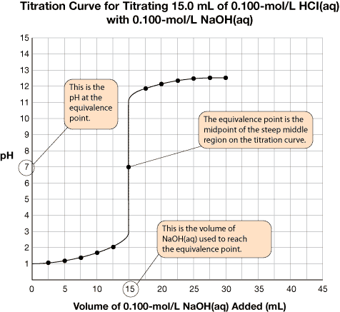
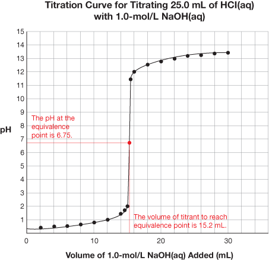
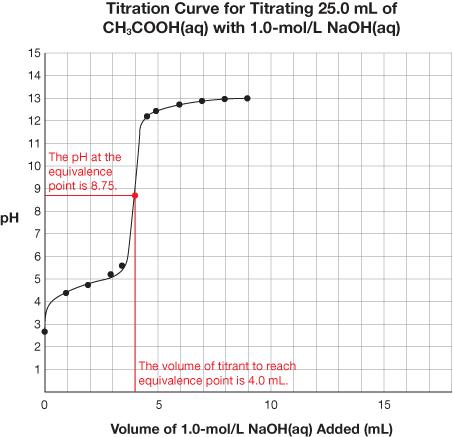

The unique shape of a titration curve demonstrates that important changes occur. Interpreting the different parts of a titration curve is an important skill. Read “Interpreting Titration pH Curves” on pages 334 and 335 of the textbook.
You will note that a titration curve conveys a great deal of information about the chemical reaction that occurred to produce this data.
A very important piece of information on the graph is the equivalence point. The equivalence point represents the end of the reaction and is located at the midpoint of the steep middle region. While the titration graph for a strong monoprotic acid reacting with a strong monoprotic base will have an equivalence point pH of 7, this is not necessarily the case for weak acids or weak bases being titrated.
The volume of titrant required to reach the equivalence point is the value used to complete calculations like those you have completed in the previous lessons.
The titration data and the completed titration curve are shown here for comparison.
![A two column table containing the data from a titration is shown. The left hand column is titled Volume of zero decimal one zero zero aqueous NaOH. The right hand column is titled pH. The data for each row, read as volume and its corresponding pH, is: Row 1: 0 and 1 decimal 0, Row 2: 2 decimal five and 1 decimal 2, Row 3: 5 decimal zero, 1 decimal 3, Row 4: Seven decimal five, one decimal five, Row 5: Ten decimal zero, 1 decimal 7, Row 6: 12 decimal 5, 2 decimal zero, Row 7: 15 decimal zero, 7 decimal 0, Row 8: 17 decimal 5, 11 decimal 9, Row 9: 20 decimal 0, 12 decimal 1, Row 10: 22 decimal 5, 12 decimal 3, Row 11: 25 decimal 0, 12 decimal 4, Row 12: 27 decimal 5, 12 decimal 5, Row 13: 30 decimal zero, 12 decimal 5](../../images/m7/035_table.jpg)

SC 1. Select and perform Lab 10: Titration of Strong and Weak Acids after you click Lab List. Draw the titration curves for the titration of both acids. (Ignore the typo in the Lab Manual that says CHEM 30 rather than CHEM 20).
 Self-Check Answer
Self-Check Answer
SC 1.


Titration |
Equivalence Point pH |
Volume of Titrant to Reach Equivalence Point |
HCl(aq) vs. NaOH(aq) |
6.75 |
15.2 mL |
CH3COOH(aq) vs. NaOH(aq) |
8.75 |
4.0 mL |
If you titrate HCl(aq) with NaOH(aq)—two colourless solutions—without using an indicator, there will be no colour change to signify that the equivalence point has been reached. Indicators respond to changes in pH and provide a dramatic colour change to signify the endpoint of a titration. But with so many indicators to choose from, which one is best?
Read “Choosing Acid-Base Indicators for Titration” on page 336 of your textbook.
A good rule of thumb for selecting an indicator is that the midpoint pH of the range of colour change is equal to the equivalence point pH.
SC 2. Refer back to the titration curves you drew for Lab 10: Titration of Strong and Weak Acids. Use the information provided in the “Acid-Base Indicators” table in the Chemistry Data Booklet to identify suitable indicators that will signify the endpoint for each of the titrations. Then indicate the colour change that would signify the endpoint of the titration.
SC 2.
Titration |
Suitable Indicator |
pH of Indicator |
Colour Change at Endpoint |
HCl(aq) vs. NaOH(aq) |
bromothymol blue |
6–7.6
6–8.0 |
green (intermediate between yellow to blue) orange (intermediate between yellow and red) |
CH3COOH(aq) vs. NaOH(aq) |
thymol blue phenolphthalein |
8–9.6
8–10.0 |
green (intermediate between yellow to blue) pink |
Complete questions 2 and 3 in the Module 7 Lesson 3 Assignment.